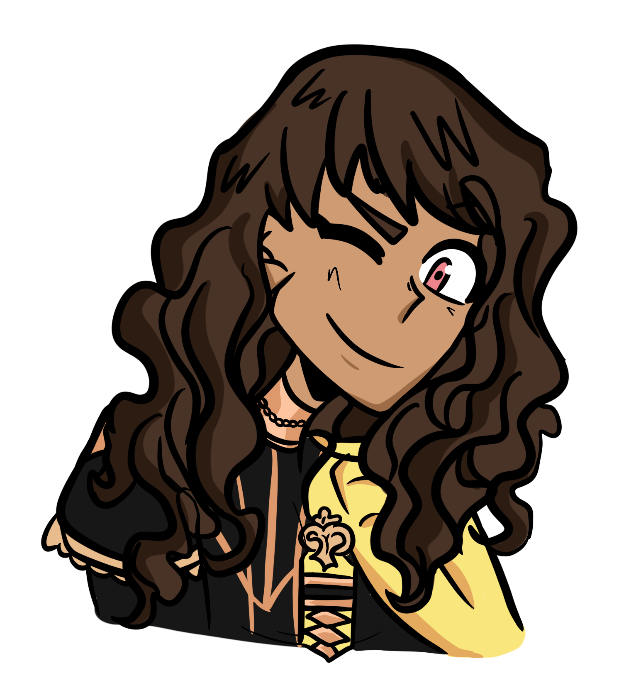
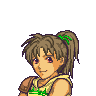
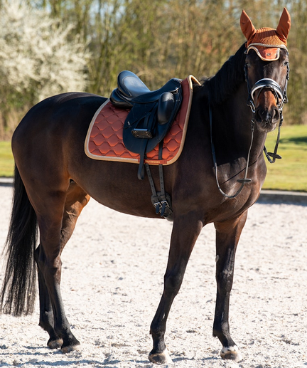
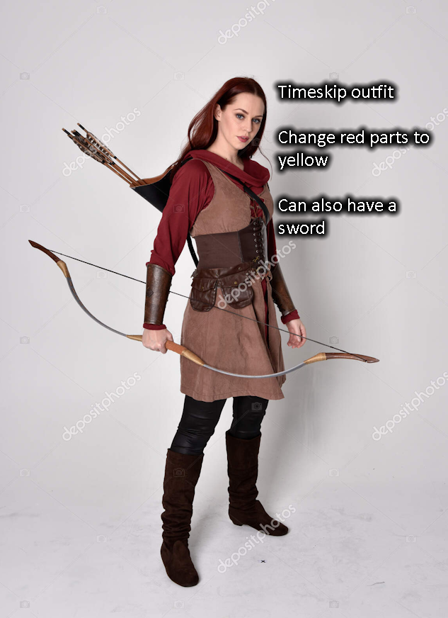

|
 |
Name: Giselle Judith Riegan Race: Human Gender: Female Sexuality: Straight Birthday: 9th of the Garland Moon (June 9th), 1183 Height: 5'1 - 5'3 Hair: Dark brown, tied back Eyes: Pink Skin: Tan Country: Leicester |
Personality: Always been the leader out of the twins, her father noticed it when they were as young as four months. While this is clear, she can also be bossy and bully her brother to a certain extent, but he will let her know when he's sick of it. Great student, hard worker, and is often breaking up fights between the other two house leaders: Kion and Astor, and referring to them as “stinky boys”. Appearance: She's got her father's tan skin and dark brown hair, but her mother's pink eyes. Her hair is usually kept in a ponytail. About average height for a young lady her age, has some well muscled arms as she is an archer mainly, and lean and fit in general due to her crest. Usually wearing riding tunics, boots, leggings, and also has the yellow house leader sash of the Golden Deer. Likes: Baked apple treats, archery, being organized, studying Dislikes: Lazy people, dumb arguments, nuts in cookies, procrastinators |
Pre Canon:
Her father, Claude aka Khalid, trusted one brother to take over Almyra’s throne and keep the two noble families of Almyra and Leicester in touch. So, after the War of Flames, he remained in Leicester as its archduke. He and Hilda, who started as friends with benefits in academy, were married at the Riegan estate to the blessings of Duke Holst Goneril, Hilda’s older brother. The twins were born the next summer.
Giselle was the first one out, and she waited until her father had left for the cafeteria to make her grand entrance followed by her brother Collin. Hilda named both of them and Claude wasn’t going to argue. Already they had established how things would go: Giselle would always lead and Collin would take his sweet time after her. This was clear to their father as young as four months.
At three years old, they were brought over to Faerghus with their parents and aunt and uncle from Almyra because King Dimitri invited his old friends to stay in a cabin for a week. They played with Prince Kion well, but would remember very little of him by the time the academy opened.
Before the academy reopened when the twins were of age for it, they were assigned a retainer from House Gloucester. Landon immediately built a rapport under the watchful, judging eye of his father, Lorenz.
During Canon:
Giselle led the Golden Deer house when the academy reopened. After graduation, she went straight to the roundtable as an archduchess in training. It was a rough start, with judgement and high expectations from every corner. Her first big challenge came when family from Almyra, a second cousin named Abdul, arrived with horrible news. Locusts and drought had stripped fields bare, and on top of that, shades of long dead Almyran asbarans and mercenaries roamed the steppe. This had to be the doing of the remainder of TWSITD, somehow, even if most sightings were in Faerghus.
She worked at diplomacy and leadership, trying her hardest to find some way to help her neighbors and please as many important people as possible. It was not easy, with pushback from the roundtable, some still harboring racism against Almyrans, and some holding the view that Leicester came first. Meanwhile, fellow former house leaders Kion and Astor dealt with their own struggles and growing pains regarding being newly established royals in the wider Fodlan political climate. Every one of the three started to see a pattern: TWSITD had their grubby hands all over. And at the climax of this fight, when the three got blessed by their respective ancestors, Giselle overexerted her Crest of Riegan and needed a blood transfusion from Collin to recover.
Post Canon:
Her “canon” ship is with one of the sons of Margrave Sylvain Gautier of Faerghus and his opera diva lover who became his wife: Dorothea. She bonded with Rosco over horseback archery, although she had to be told by Claude that it was unfair to one up her boyfriend with Failnaught in the target range. When she was ready to continue the Riegan bloodline with Rosco as her husband, she was slightly peeved when the physician told her she was carrying twins, but got over it and raised the two dark ginger haired boys with love.
Collin stepped up and manned her office while she was on maternity leave. He color coded her filing cabinets, a thing that she hadn’t done yet.
When her grandfather, the Almyran king, passed away and her uncle took the throne, Grandma Tiana returned to the land of her birth and settled in the Riegan estate. Giselle and Tiana butted heads, they were so much alike, and Claude had a new challenge on his hands: dealing with a stubborn young woman and a stubborn old woman and getting them to get along.
In a few generations, a Riegan child was born with lightning yellow eyes. A reminder of the Almyran “Thunder King”’s presence in the bloodline.
|
RelationshipsClaude/Khalid (father) Hilda (mother) Collin (brother) Holst, Uzair (uncles) Shahid (estranged deceased uncle) Abdul (second cousin) Tiana (grandmother) Boran (grandfather) Kent (horse, chestnut stallion) Rosco (husband) Two sons |
Starting Class
Best Class |
Personal Skill:Swift Sight Counters ranged attacks against unit and grants avo + 5 for next turn. |
Crit Quotes:
"Not spry enough!"
Death Quote:"I can't...fall..." |


Extra Images
|
 GBA portrait |
Crest scan (manifested Riegan, carrying Goneril) |
|
 Kent (horse) |
 Outfit reference |
Art from Scuffle
| Her and her uncle Uzair by Heiden |